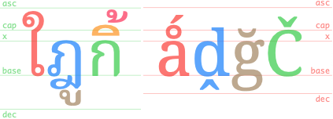

This page brings together basic information about the Thai script and its use for the Thai language. It aims to provide a brief, descriptive summary of the modern, printed orthography and typographic features, and to advise how to write Thai using Unicode.
This page is a work in progress. The information given here should be correct, but needs to be added to and refined further.
Phonological transcriptions on this page should be treated as an approximate guide, only. They are taken from the sources consulted, and may be narrow or broad, phonemic or phonetic, depending on what is available.
The Thai script is used primarily for writing the Thai language, as well as Northern Thai, Northeastern Thai, Southern Thai, and Thai Song, which are separate languages. It is also used to write a number of minority languages in Thailand, Laos and China, as well as Pali, which is widely used in Buddhist temples and monasteries.s
อักษรไทย
The alphabet was derived from the Old Khmer script, which descended from Pallava. Thai tradition attributes the creation of the script to King Ramkhamhaeng the Great (พ่อขุนรามคำแหงมหาราชpʰo kʰun raːm kʰam ŋɛː ma haː raː tɕʰa) in 1283, though this has been challenged.
Both the Thai language and script are closely related to Lao and its script.
Thai is an abugida. Consonant letters have an inherent vowel sound. Vowel-signs are attached to the consonant to produce a different vowel. See the table to the right for a brief overview of features for the modern Thai orthography.
Thai text runs left to right in horizontal lines.
Spaces separate phrases, rather than words.
Each onset consonant is associated with a high, mid, or low class related to tone. Tone is indicated by a combination of the consonant class, the syllable type (checked/unchecked), plus any tone mark.
No conjuncts are used for consonant clusters.
Syllable-initial clusters and syllable-final consonant sounds are all written with ordinary consonant letters. It can therefore be difficult to algorithmically detect syllable boundaries.
The inherent vowel is pronounced o inside a closed syllable, and a in an open syllable. 15 vowel-signs (including 5 pre-base vowels), and 5 consonants/diacritics represent non-inherent vowels. Only the 7 vowel-signs that appear above or below the consonant are combining marks; the others are ordinary spacing characters that are typed in the order seen. Vowels are often written differently when they appear in a closed vs. open syllable.
There are no independent vowels, and standalone vowel sounds are written using vowel-signs applied to อ [U+0E2D THAI CHARACTER O ANG].
This page lists 37 composite vowels (made from 12 vowel-signs, and 4 consonants/diacritics). Composite vowels can involve up to 4 glyphs, and glyphs can surround the base consonant(s) on up to 3 sides, eg. เกียะek̯īy̱akiːa
Thai has vocalics.
Thai has native digits, and they are commonly used.
Thai syllables allow the following patterns, where V can be a short or a long vowelc,#Thai.
VVCCVCVCCCVCCVC
The long vs. short vowel distinction is phonemically important. Long vowels are approximately twice the length of short ones. All open syllables have long vowels.wl,#Vowel_developments
Consonant clusters only occur in syllable initial position, with the following permissable combinations:c,#Thai
pʰrpʰl
tʰr
kʰrkʰlkʰw
Syllable-final consonants can be one of the following.c,#Thai Stops are unreleased.
-p̚-t̚-k̚-m-n-ŋ-j-w
Phonology
Click on the sound groups to see where else in the document each of the sounds are referred to.
The majority of diphthongs and all 3 triphthongs in Thai end in j or w.wl,#Phonology The exceptions are a handful of diphthongs that end in ə.
Consonant sounds
Labial
Dental
Alveolar
Palatal
Velar
Glottal
Retroflex
Stop
p pʰ b
ttʰ d
kkʰ
ʔ
Affricate
tɕtɕʰ
Fricative
f
s
h
Nasal
m
n
ŋ
Approximant
w
l
j
Trill/flap
r
labial
dental
alveolar
post-
alveolar
palatal
velar
glottal
stops
pb
td
k
ʔ
aspirated
pʰ
tʰ
kʰ
affricates
t͡ɕ
aspirated
t͡ɕʰ
fricatives
f
s
h
nasals
m
n
ŋ
approximants
w
l
j
trills/flaps
r
Finals
labial
dental
alveolar
post-
alveolar
palatal
velar
glottal
stop
p
t
k
ʔ
nasal
m
n
ŋ
approximant
w
j
Labial
Dental
Alveolar
Palatal
Retroflex
Velar
Glottal
Stop
p
t
k
ʔ
Affricate
Fricative
Nasal
m
n
ŋ
Approximant
w
j
Trill/flap
Tones
'Checked' means ending in the sound -p, -t, or -k or a short vowel (which in careful speech may end in a glottal stop). 'Unchecked' means ending in sonorants m, n, ŋ, w, j or a long vowel.
The following table provides typical phonological transcriptions and descriptions for the five tones.wl,#Tones
high
á
˦˥
unchecked or checked syllables
ค้า; มัก
mid
a/ā
˧
unchecked syllables only
คา
low
à
˨˩
unchecked or checked syllables
ข่า; หมัก
rising
ǎ
˧˨˧
unchecked syllables only
ขา
falling
â
˥˩
unchecked or checked syllables
ค่า; มาก
Vowels
Thai vowels all come in short and long forms, which are phonemically distinctive. A set of diphthongs end in a̯, and most vowels can be followed by either w or j.
Short vowels in open syllables usually end with a glottal stop.
This section maps Thai vowel sounds to common graphemes in the Thai orthography. The dotted circle indicates the location of the consonant relative to the vowel-sign; if there are 2 circles, the vowel is used only in closed syllables. Click on a grapheme to find other mentions on this page (links appear at the bottom of the page). Click on the character name to see examples and for detailed descriptions of the character(s) shown.
Wiktionary provides a very useful table of Thai rhymes.
Inherent vowels
The inherent vowel is pronounced o inside a closed syllable, and a in an open syllable. So ka can be written by simply using the consonant letter ก [U+0E01 THAI CHARACTER KO KAI], and kon by just the 2 consonants, กน [U+0E01 THAI CHARACTER KO KAI + U+0E19 THAI CHARACTER NO NU]. Example of a single word using both inherent vowels:
ถนน
A third inherent vowel, ɔː, occurs before a syllable-final RA (which is pronounced n), eg.
ศรนคร
An orthography that uses vowel-signs is different from one that uses simple diacritics or letters for vowels, in that the vowel-signs are generally attached to the syllable, rather than just applied to the letter of the immediately preceding consonant (see prescript_vowels). In Thai, vowel characters may be used on their own, or in combination with other characters (see composite_vowels).
Vowels in Thai are written with a mixture of combining characters and ordinary spacing characters, Only the superscript and subscript vowel-signs are combining characters. It is also common to use some consonants to represent vowel sounds (see consonant_vowels).
As shown above, a given sound may be written differently depending on whether it appears in an open or a closed syllable. Closed syllables have a written consonant after the vowel.
Combining marks used for vowels
Thai uses the following combining characters for vowels.
ิ␣ี␣ึ␣ื␣ุ␣ู␣็␣ั
Maitaikhu
็ [U+0E47 THAI CHARACTER MAITAIKHU] is used to shorten vowel sounds, but also occasionally operates as a vowel-sign in its own right.
It converts vowels produced by the following three vowel signs to short vowels when they occur in medial position:
เ–็–eː becomes e, eg. เด็ก
–็อ–ɔː becomes ɔ,
แ–็–ɛː becomes ɛ (not very common).
It is also used for ewเ–็ว (eːw > ew), eg. เร็ว
One word consists of this diacritic over a consonant with no vowel-sign: ก็
Letter characters used for vowels
The following additional, vowel-specific characters are ordinary spacing characters, with the general category of 'letter'.
เ␣โ␣แ␣ะ␣า␣ ␣ไ␣ใ␣ำ
Sara AM & nikhahit
ำ [U+0E33 THAI CHARACTER SARA AM] is classed as a vowel, but also contains the final consonant m, represented by a built-in nikhahit.
The consonant ร [U+0E23 THAI CHARACTER RO RUA] is pronounced as a vowel a when doubled medially, eg. ธรรม When doubled at the end of a syllable it is pronounced an, eg. กรรไกร Note, however, that this may also constitute the end and beginning of two syllables, eg. ภรรยา
Pre-base vowel signs
เ␣แ␣ใ␣ไ␣โ
Five vowel-signs appear to the left of the onset consonant, eg. ไข่
Thai uses a visual encoding model and these are not combining characters. They are typed and stored before the base.
These vowel-signs are placed before the start of the syllable. This means that a word with a consonant cluster at the start separates the prescript vowel from any postscript vowels by more than one consonant character, eg.
เปล่าโปรแกรม
The following list shows where vowel-signs are positioned around a base consonant to produce vowels, and how many instances of that pattern there are. The figure after the + sign represents combinations of Unicode characters,
5 prescript, eg. โกok̯ (ko)
2 postscript, eg. กาk̯ā
5 superscript, eg. กิk̯i
2 subscript, eg. กุk̯u
1+5 sup+postscript, eg. กือk̯ɯ̄ʔ̯kɯːo
+4 post+postscript, eg. กาวk̯āw̱kaːw
+2 sub+postscript, eg. กุยk̯uy̱kuj
+10 pre+postscript, eg. เกะek̯akè
+3 pre+superscript, eg. เกิek̯ikɤː
+2 super+post+post, eg. กัวะk̯äw̱akua
+2 pre+post+post, eg. เกาะek̯āakɔ̀
+3 pre+sup+postscript, eg. เกือek̯ɯ̄ʔ̯kɯːa
+4 pre+sup+post+postscript, eg. เกียะek̯īy̱akiːa
At maximum, vowel components can occur concurrently on 3 sides of the base.
Vowel absence after syllable-final consonants is not normally marked in any way. Nor is it marked in syllable-initial clusters.
์ [U+0E4C THAI CHARACTER THANTHAKHAT] can be used above a consonant or syllable when it is not pronounced (usually at the end of a syllable), eg. รถเมล์ศักดิ์สิทธิ์ It is often used for foreign loan words, eg. คอมพิวเตอร์โปสการ์ดสแตมป์
Tones
'Checked' means ending in the sound -p, -t, or -k or a short vowel (which in careful speech may end in a glottal stop). 'Unchecked' means ending in sonorants m, n, ŋ, w, j or a long vowel.
Each onset consonant is associated with a 'high', 'mid', or 'low' class related to, but not indicative of, tone. (For example, when they appear without tone marks the 'high' class consonants produce a rising tone, and 'mid' or 'low' class consonants both produce a mid tone.)
Tone is also affected by the use of the following combining marks on unchecked syllables, however in 2 cases the result of their use is also context-dependent, due to historical linguistic changes. (For example, ่ [U+0E48 THAI CHARACTER MAI EK] can produce either a low tone or a falling tone, depending on the class of the onset.)
่␣้␣๊␣๋
In the end, tone is indicated by a combination of the consonant class, the syllable type (checked/unchecked), vowel length (for checked syllables), plus any tone mark.
Figure out the tone, depending on the sequence of characters used.
Consonant
Checked?
Tone mark
Tone
high
checked
short
˩˩low
long
˩˩low
open
-
˩˥rising
่
˩˩low
้
˥˩falling
mid
checked
short
˩˩low
long
˩˩low
open
-
˧˧mid
่
˩˩low
้
˥˩falling
๊
˦˥high
๋
˩˥rising
low
checked
short
˦˥high
long
˥˩falling
open
-
˧˧mid
่
˥˩falling
้
˦˥high
Checked syllables
The following table shows the various ways of writing tones in checked syllables. Only 3 tones are available, and no diacritics are used. Vowel length changes the tone after a low register consonant.
consonant
vowel length
high tone
LOW
short
low tone
HIGH
–
MID
–
falling tone
LOW
long
Unchecked syllables
The next table shows the various ways of writing tones in unchecked syllables. All 5 tones are possible.
The expected typing and storage position for tone marks is immediately after the base consonant of the syllable, or after a superscript or subscript vowel-sign if there is one.
The tone mark should be typed before ำ [U+0E33 THAI CHARACTER SARA AM], but should be displayed above the nikhahit, eg. ก่ำ
Vocalics
ฤ␣ฦ␣ๅ
These letters are actually considered to be consonants in Thai.
This section maps Thai consonant sounds to common graphemes in the Thai orthography, grouped by high class ( h ), mid class ( m ), low class ( l ) and syllable-final ( f ) types. Click on a grapheme to find other mentions on this page (links appear at the bottom of the page). Click on the character name to see examples and for detailed descriptions of the character(s) shown.
A silent ห [U+0E2B THAI CHARACTER HO HIP] is added before the characters in the list below to make their default tonal class high.
ม␣น␣ง␣ว␣ร␣ล␣ย␣ญ
Examples: หมาหยุด
See onset_clusters for further details about how these are presented.
The letter O ANG
อ [U+0E2D THAI CHARACTER O ANG] is silent when used as a base for vowels at the beginning of a syllable. When it appears alone after a base consonant it becomes the vowel ɔː. It is also used in combination with other characters to produce additional vowel sounds (see independent).
Consonant clusters
Consonant clusters occur syllable-initially, or where one syllable ends with a consonant and the next begins with one.
Thai doesn't have conjuncts, stacking, or special code points for final consonants, etc.
Syllable-onset clusters
Consonant clusters at the start of a syllable are usually one of the following:
There are no dedicated code points for glides when they are used after an initial consonant, so it is feasible that ปลา could be pronounced pà laː in a different context.
Tone marks and/or super-/subscript vowel-signs are attached to the second consonant, eg. เปลี่ยน
Prescript vowel-signs are placed before the first consonant in the cluster, ie. at the start of the syllable, eg. (where this occurs twice) โปรแกรม
The vocalics can also be used after an initial consonant, and again can create ambiguity for pronunciation, eg. compare พฤหัสพฤษภา
Final+initial consonant folding
A consonant that appears at both the end of one syllable and the beginning of the next may be expressed with a single character, even if the sounds in each phonetic location differ, eg. สinพิสดาร or ล in จุลทัศน์
Only the following set of consonants behave in this way.
จ␣ช␣ศ␣ษ␣ส␣ล
Syllable-final consonants
Only the phonemes p, t, k, m, n, ŋ occur at the end of a syllable, however many more consonant letters can appear in final position.
The following consonant letters are pronounced differently in syllable-initial and syllable-final positions.
จ␣ช␣ศ␣ษ␣ส␣ร␣ล␣ญ
For example,ล in ลิงตำบล
Consonants at the end of a syllable use ordinary code points, eg. ตื่น
This can create some ambiguity, since there is no distinction between the sequence in the previous example and one where น is a new syllable with an inherent vowel.
The one exception is the character that is normally regarded as a vowel, ำ [U+0E33 THAI CHARACTER SARA AM], which includes the final m sound, eg. ห้องน้ำ (A final m is not always represented using sara am) eg. ห้าม
Other characters
๎␣ฺ
๎ [U+0E4E THAI CHARACTER YAMAKKAN] is an ancient punctuation mark used to mark clusters, such as in พ๎ราห๎มณp̱ʰ๎ṟāh๎m̱ṇ̱pʰraːmǒn
This section brings together information about the following topics:
writing styles;
cursive text;
context-based shaping;
context-based positioning;
baselines, line height, etc.;
font styles;
case & other character transforms.
None of the Thai characters require special shaping based on the visual context. Nor is printed text cursive.
The orthography has no case distinction, and no special transforms are needed to convert between characters.
Writing styles
Modern type styles often omit the loops found in more traditional typefaces. See an article that explores this in depth.
Loopless is considered to be more contemporary and modern, and is mainly used for advertising and titling. The distinction doesn’t necessarily map to that of serif vs sans – Noto, for example, provides both serif and sans Thai font faces, but they both have loops. On the other hand, Neue Frutiger Thai offers traditional (looped) and modern (loopless) alternatives as part of the same font family (each with both regular, italic and bold substyles).
The Silom font uses the traditional looped glyphs.The Sukhumvit Set font uses modern unlooped glyphs.
Context-based positioning
Most of the combining characters in Thai are used for vowel-signs and tone marks.
Combining characters need to be placed in different positions, according to the context. The example below shows the same tone character displayed at different heights, according to what falls beneath it.
The same tone mark displayed at different heights.
Thai regularly combines multiple combining characters above a base consonant. There are two examples in the text below, both of which show a base character with a vowel sign and then a tone mark on top.
Multiple diacritics (vowel sign + tone mark) attached to the same base character.
Baselines, line height, etc.
Thai places vowel and tone marks above base characters, one above the other, and can also add combining characters below the line. The complexity of these marks means that the vertical resolution needed for clearly readable Thai text is higher than for English, or most Latin text.
The baseline of Thai text is the same as that of embedded Latin text, so there are no particular issues related to alignment of baselines between fonts.

Metrics for the Noto Serif Thai and Noto Serif fonts, viewed in Hibizcus.
Line height, then, tends to be greater than for Latin text, but also Thai tends to adds more interline spacing than Latin text does.
Font styles
Ben Mitchell describes how italicisation is used for meta-text and to convey the ‘about’ voice, rather than for emphasis or names of things (for which bold is used).
Italicisation tends to be applied to whole paragraphs or groups of paragraphs, for such things as picture captions, bylines, and other labels, commentaries, summaries such as standfirsts in magazines or news stories, and signposting. It is also regularly used for direct speech between quote marks.
Observation: Thai newspapers appear to use italic text for captions and by-lines. There is no evidence of the use of inline italicisation, but there is inline bolding.
Punctuation & inline features
Grapheme boundaries
Non-combining Thai vowel characters are treated as independent grapheme clusters. Only combining characters are grouped together with their base into a cluster.
Grapheme cluster boundaries split spacing vowel-signs from their base consonants, but not combining characters.
The grapheme cluster boundaries indicate the units of text used by cursor movements and forward deletion. It also allows justification algorithms to insert equal amounts of space between non-combining letters, including between non-combining vowel-signs and their consonants.
Thai segmentation may have to deal with ambiguous situations. Take for example the word
ถนน
Because syllable-final sounds are ordinary letters, with no special indication, this could be parsed as ta.non, ton.na, or even ta.na.na, and indeed some words are written the same but pronounced differently, eg.
นม
Similarly, because medial consonants are written with normal characters, there is a possibile ambiguity about whether a sequence contains an inherent vowel, eg.
กรี
Word boundaries
Thai doesn't separate words in a phrase.
There is, however, a concept of words in the text. For example, lines are supposed to be broken at word boundaries.
Word boundaries occur where the vertical lines appear, though they are not marked by the script.
The main difficulty arises when dealing with compound words. It can often be difficult to decide whether a given string of syllables represents multiple words or a single compound word.
Alternative line break opportunities for Thai text using compound nouns.
The variation may be related to the operation being performed on the text (eg. line breaking in narrow newsprint columns, vs. double-click selection, vs. cursor movement, etc.), or it may just be down to personal preference,
The difference may also be contextually dependent. Wirote Aroonmanakun describes how คนขับรถ should be viewed as a single word in the context คนขับรถนั่งคอยอยู่ในรถ, whereas in the phrase คนขับรถผ่านแยกนี้ไม่มากนัก it would be viewed as 3 words, referring to anyone who is driving.at
Proper names, which are composed from multiple words, are also problematic, especially because there are no capital letters to distinguish them from other pieces of text.g2455,#issuecomment-375162188
ZWSP & WJ
In order to manually fine-tune word-boundary detection, the invisible character [U+200B ZERO WIDTH SPACE] (ZWSP) can be used to create breaks.u,625
To prevent a break between syllables, [U+2060 WORD JOINER] (WJ) can be used.
It is also important to bear in mind that Thai may be used to write various languages, in particular minority languages for which different dictionaries are needed. Since such dictionaries may not available in a given browser or other application, there is a tendency to use ZWSP in order to compensate.
Large-scale manual entry of ZWSP and WJ has potential downsides because the user cannot see them; this leads to problems with ZWSP being inserted in the wrong position, or multiple times. However, these don't set a state, so it doesn't create major issues. It would be useful, however, if an editor showed the location of these characters.
Care should also be taken when trying to match text, eg. for searching in a page. WJ should be ignored. ZWSP may or may not be ignored, depending on whether word boundaries are significant for the search.
Thai uses space as a phrase marker, rather than to delimit words, often in places where English text would use commas or periods.
Latin-based punctuation such as comma, period, and colon are also used in text, particularly in conjunction with Latin letters or in formatting numbers, addresses, and so forth.
๚ [U+0E5A THAI CHARACTER ANGKHANKHU] is used to mark the end of a long segment of text. It can be combined as ๚ะ to mark a larger segment of text; typically this usage can be seen at the end of a verse in poetry.u,625
๛ [U+0E5B THAI CHARACTER KHOMUT] marks the end of a chapter or document, where it always follows the ๚ะ combination.u,625
ๆ [U+0E46 THAI CHARACTER MAIYAMOK] is used to mark repetition of preceding letters.u,625 It is typically preceded and followed by a space, eg. ทุกวัน ๆ However, some publishers prefer to publish without a leading space,g19,#issuecomment-579378205 ie. ทุกวันๆ
This character shouldn't be wrapped to the beginning of a new line on its own, and should be kept not far from the preceding text that it duplicates during justification.g19,#issuecomment-579378205
Abbreviation
ฯ
ฯ [U+0E2F THAI CHARACTER PAIYANNOI] is used to indicate elision or abbreviation of letters; it is viewed as a kind of letter, however, and is used with considerable frequency because of its appearance in such words as the Thai name for Bangkok, กรุงเทพฯk̯ṟuŋ̱eṯʰp̱ʰ⋯krūŋ tʰêːpwhich is short for กรุงเทพมหานครk̯ṟuŋ̱eṯʰp̱ʰm̱hāṉḵʰṟkrūŋ tʰêːp mahǎː nákʰɔ̄ːnIt is followed by a space.
Ellipsis
ฯ␣…
Paiyannoi is also used in the combination ฯลฯ to create a construct called paiyanyai , which means “et cetera, and so forth.”u,625
Some abbreviations are written using a full stop, eg. สนง.ตปท.sṉŋ̱.t̯p̯ṯʰ.Office of the Royal Thai Police which is short for สำนักงานตำรวจแห่งชาติsaᵐṉäk̯ŋ̱āṉt̯aᵐṟw̱c̯ɛh¹ŋ̱c̱ʰāt̯i
Thai doesn't indicate word boundaries, but when Thai text is wrapped at the end of a line you should not split a word.
As you change the width of the browser window the highlighted text above should break at the following points if your browser supports Thai wrapping:
Break points detected in a sequence of Thai characters by an automatic word segmenter.
Because Thai doesn't separate words, applications typically look up word boundaries in a dictionary, however, such lookup doesn't always produce the needed result, especially when dealing with compound words and proper names (see words). To counteract these deficiencies, authors may use [U+200B ZERO WIDTH SPACE] and [U+2060 WORD JOINER] (see zwsp).
Justification in Thai primarily adjusts the blank spaces between phrases, rather than expanding the text between words or syllables. The fact that lines break at word boundaries helps reduce the size of the gaps produced.
Thai may also make certain adjustments to inter-character spacing. The character-based spacing is most common in narrow columns, such as newsprint, where there is no space except at the end of a line.
Any [U+200B ZERO WIDTH SPACE] (ZWSP) is used to separate words is ignored during justification. Justification proceeds as if it wasn't there.u,625
Inter-character spacing
The justification in fig_justification_intercharacter_spacing shows equal spacing across a phrase where there are no space characters to stretch. Note how the equal spacing separates prebase and postbase vowel signs from their consonants by the same amount as consonants are separated from each other; they are not kept together with the base consonant they modify.
A line with no spaces applies inter-character spacing to justify the text.
This kind of spacing requires a special behaviour for ำ [U+0E33 THAI CHARACTER SARA AM]. The small circle is kept with the preceding consonant, and space is added before the spacing part of the vowel, as shown in fig_am_spacing.
Sara AM before (left) and after (right) inter-character spacing has been applied.
(To facilitate this, applications tend to convert ำ [U+0E33 THAI CHARACTER SARA AM] to the sequence ํา [U+0E4D THAI CHARACTER NIKHAHIT + U+0E32 THAI CHARACTER SARA AA] before stretching. Some care has to also be taken to correctly order the superscript glyphs, since in memory the tone mark precedes the nikhahit. The nikhahit character is not otherwise used for modern Thai.)
Paragraph indentation
Thai does indent the initial line of a paragraph.
Indentations at paragraph start in a Thai newspaper.
Counters, lists, etc.
You can experiment with counter styles using the Counter styles converter. Patterns for using these styles in CSS can be found in Ready-made Counter Styles, and we use the names of those patterns here to refer to the various styles.
๏ [U+0E4F THAI CHARACTER FONGMAN] is the Thai bullet, which is used to mark items in lists or appears at the beginning of a verse, sentence, paragraph, or other textual segment. u,625
The modern Thai orthography uses numeric and alphabetic styles.
Numeric
The thai numeric style is decimal-based and uses the digits shown below.
๐␣๑␣๒␣๓␣๔␣๕␣๖␣๗␣๘␣๙
Examples:
๑␣๒␣๓␣๔␣๑๑␣๒๒␣๓๓␣๔๔␣๑๑๑␣๒๒๒␣๓๓๓␣๔๔๔
Alphabetic
The thai-alphabetic style uses the letters shown below.
It is possible to find the first letter in a paragraph styled so that it is larger and sits alongside several lines of the continuing paragraph text.
Observation: All combining characters are included in the selections shown in fig_drop_caps.
Any punctuation such as opening quotes and opening parentheses should also be included in the initial styling. ?
Two example paragraphs showing dropped highlighted initials with combining characters.
Observation: In the figures shown, the alphabetic baseline of the highlighted letter falls slightly below the bottom of the row that determines the size of the highlighted letter. It's not clear whether that's a general trend, or just related to this specific publication.
Observation: In fig_drop_caps_2, the selection picks out only แ from the syllable แฉ.
Another example paragraph, showing a prescript vowel-sign alone as a highlighted initial.
Page & book layout
This section is for any features that are specific to Thai and that relate to the following topics:
general page layout & progression;
grids & tables;
notes, footnotes, etc;
forms & user interaction;
page numbering, running headers, etc.
Languages using the Thai script
According to ScriptSource, the Thai script is used for the following languages:


 [
[ [
[